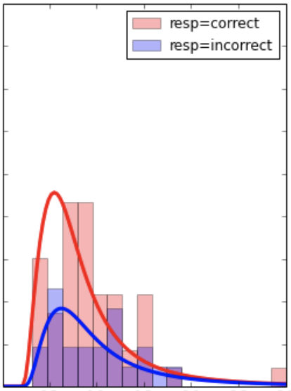
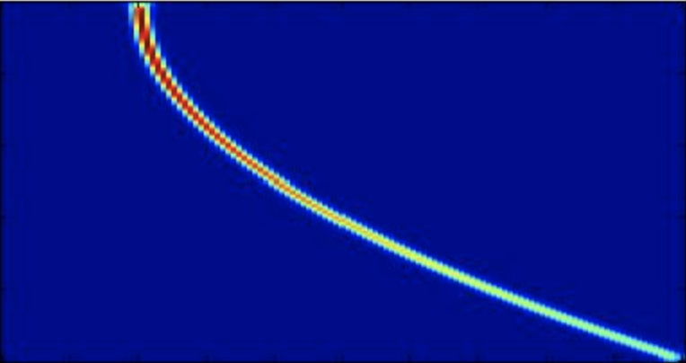
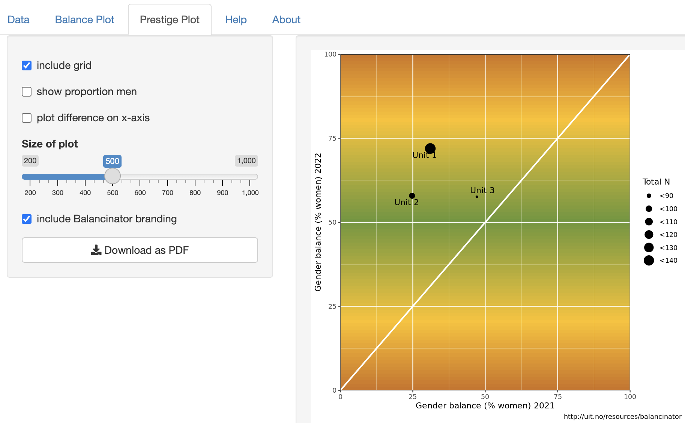
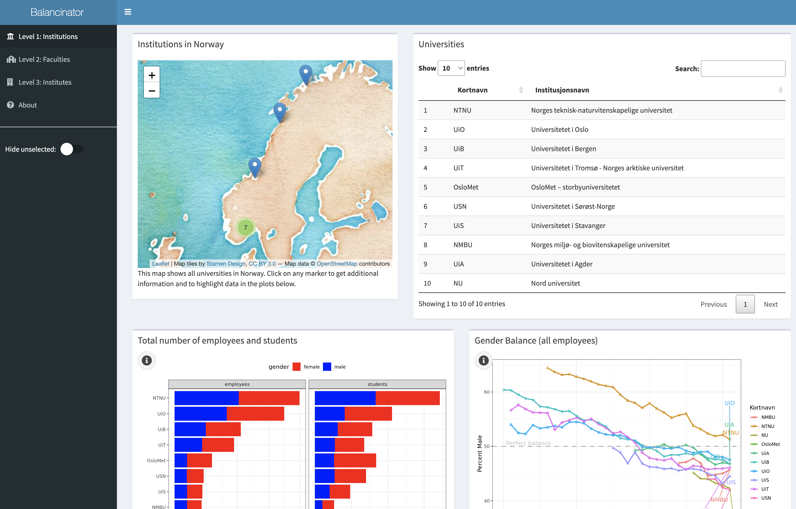
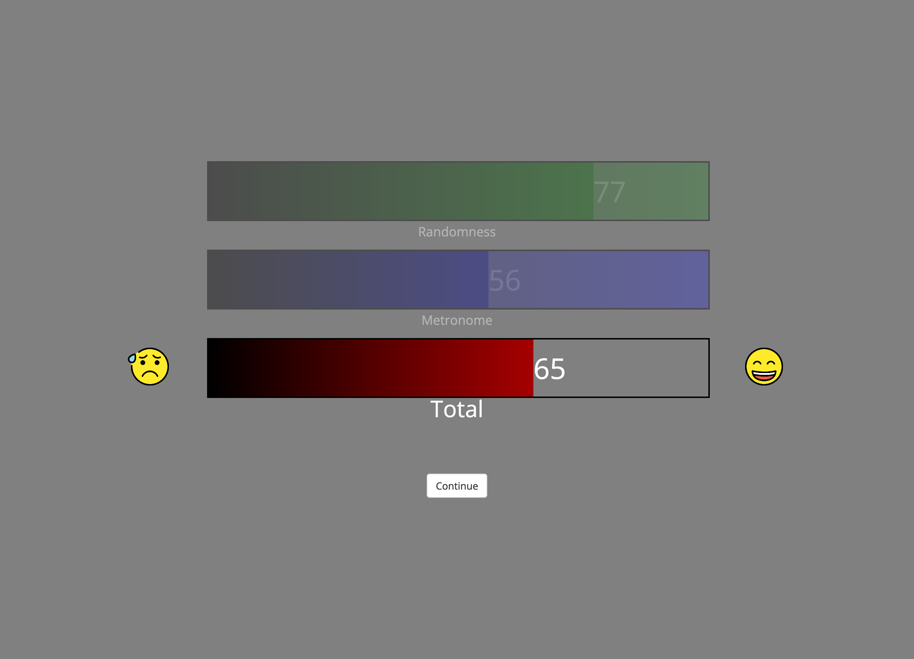
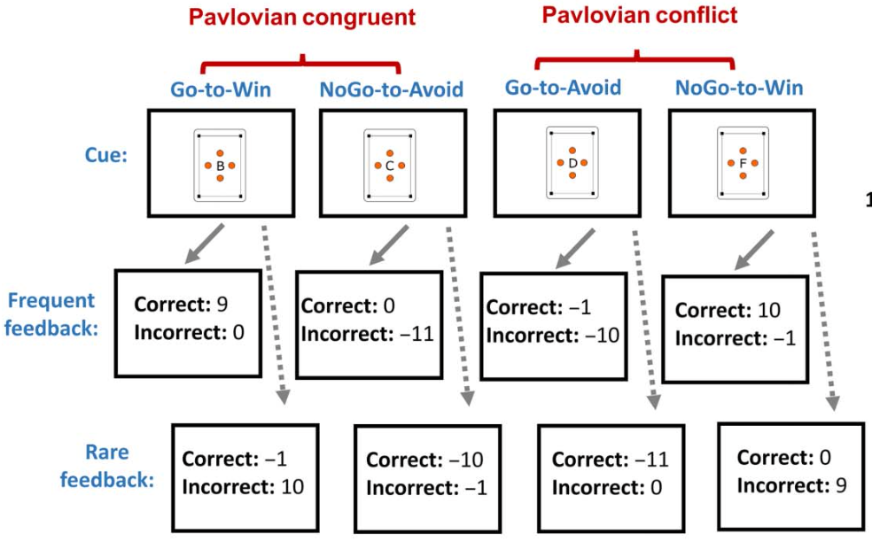
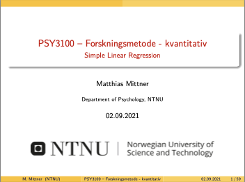
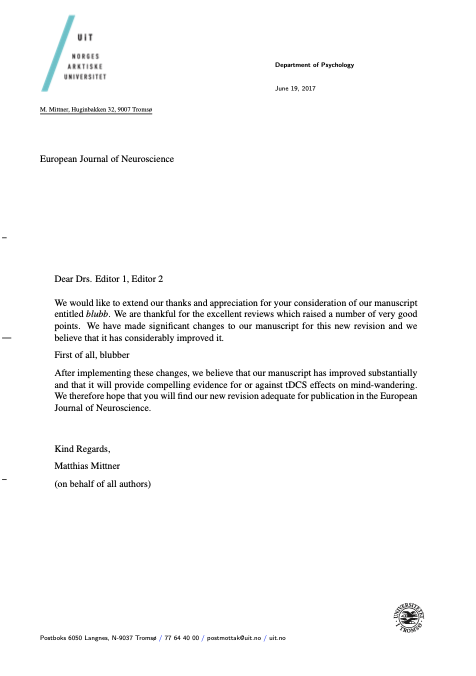

Software
Python
- Pypillometry https://github.io/ihrke/pypillometry

-
The
pypillometrypackage implements functions for the analysis of pupillometric data. Features include preprocessing, blink handling, event-related pupil-dilation, plotting and signal modeling. Homepage | GitHub | Paper
- Pyrace https://github.com/ihrke/pyrace 
- Race-models in Python. Currently focus on Stop-Signal-Tasks but supports generic accumulators and experimental designs.
- LibEEGTools https://github.com/ihrke/libeegtools 
- A C-library for processing EEG-data with minimal requirements. Implements filtering (bandpass, wavelets, …), dynamic time warping, clustering, time-frequency analysis, recurrence plots etc. Comes with a basic Python interface. Documentation | GitHub
- Nipype-connect-str https://github.com/ihrke/nipype_connect_str
- tiny grammar for NiPype to allow for a nicer connection string of nodes in workflow
Web-apps
- Balancinator https://github.com/ihrke/balancinator 
- The Balancinator is a free and open-source software to visualize distribution of men and women within a specific unit. The Balancinator allows anyone to build generic plots by inserting simple excel sheets instead of writing programming code. WebApp | GitHub
- Balancinator-HE https://github.com/ihrke/norgeibalanse 
- The Balancinator|HE is a free and open-source dashboard to visualize distribution of men and women within higher education in Norway. WebApp | GitHub
JsPsych
- jspych-plugins-mm https://github.com/ihrke/jspsych-plugins-mm 
- a couple of plugins for jsPsych I have made for our experiments. Demo | GitHub
- pavlovian-gonogo https://github.com/ihrke/pavlovian_gonogo 
- implements the Pavlovian Go/NoGo task (paper)
R-packages
- rmedsem: https://ihrke.github.io/rmedsem/

- Mediation analysis in structural equation models. GitHub
These are companion packages for my books, see my publications.
- Astatur: https://ihrke.github.io/astatur/
- companion package for: Mehmetoglu, M. & Mittner, M. (in press). Applied Statistics using R. SAGE. link
- Rnorsk: https://ihrke.github.io/rnorsk/

- Mehmetoglu, M. & Mittner, M. (2020). Innføring i R for statistiske dataanalyser. Universitetsforlaget. link
Markdown
Quarto exensions:
- quarto MDPI-style https://github.com/ihrke/mdpi

- a quarto extension for writing papers in the MDPI style
I rely on pandoc and a set of templates for writing everything from papers, letters and lectures.
- markdown-paper https://github.com/ihrke/markdown-paper

- a setup for writing scientific papers in markdown; supports different styles for various scientific journals (I add new ones when I submit a paper to a new journal), references through bibtex
- markdown-talk https://github.com/ihrke/markdown-talk 
- my setup for producing beamer-based slides for lectures and talks (PDF)
- markdown-letter https://github.com/ihrke/markdown-letter 
- writing latex-based letters with markdown; includes a template for my UiT’s letter head